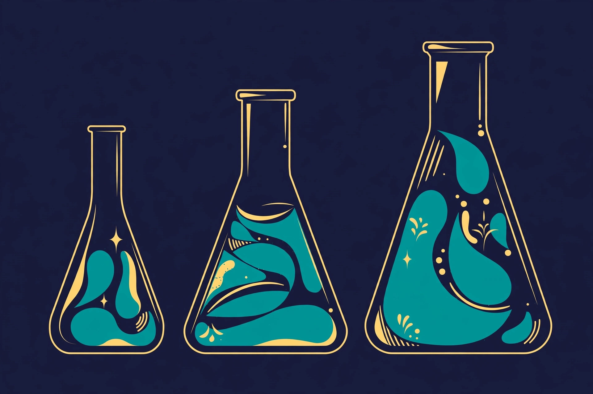

Article 06 · Health & Life Sciences · AGI Future Foundation
BioPharma.Go: Biopharmaceutical Work, Still Undefined
BioPharma.Go is Series 5 in the April 2026 internal W3 series list, and that sentence, together with the name itself, is very nearly everything verified that can be said about this series. Its name implies biopharmaceutical work — medicines and therapies developed from biological understanding. This article is thin on purpose: where there is almost nothing verified to say, the honest article says so plainly instead of filling the space with invention.
TL;DR
BioPharma.Go (S05) is a thin planned series: its name implies biopharmaceutical work, and no drug, indication, molecule, trial, laboratory, partner, publication, or programme is verified for it. The “.Go” in the name suggests movement or delivery, but no verified document explains what the suffix is meant to convey, and this article does not guess. It has no anchored metaverse fabric yet, and zero worlds are live on RP1. The series is intended and planned, not formed, funded, or offered.
The work
BioPharma.Go is Series 5 in the April 2026 internal W3 series list. That sentence, together with the name itself, is very nearly everything verified that can be said about this series. Its name implies biopharmaceutical work — medicines and therapies developed from biological understanding — and this article describes that as a planned focus, because no drug, indication, molecule, trial, laboratory, partner, publication, or programme for BioPharma.Go is verified in the files. This is a thin article on purpose: where there is almost nothing verified to say, the honest article says so plainly instead of filling the space with invention.
The domain the name implies is worth sketching carefully, because the sketch itself shows how much is still undefined. “BioPharma” could point at drug discovery, at developing a specific therapy, at manufacturing, at improving how therapies reach patients, or at the data and tools that support any of those. The “.Go” in the name suggests movement or delivery, but no verified document explains what the suffix is meant to convey, and this article does not guess. Each possible direction is a different venture, with different expertise, different regulation, different timelines, and different risks, and no verified document says which of them BioPharma.Go intends. The name alone does not choose between them.
What can be said without inventing anything is what a biopharmaceutical series would have to get right if it were built, and the list is a long one. It would need to name what it is working on and what it is not. It would need evidence produced to the standards that regulators, clinicians, and patients actually require — not a pitch claim, but a trial, a result, and a review. It would need to be clear about intellectual property, about who owns what, and about how safety is monitored after any therapy reaches people. It would need human experts — scientists, clinicians, and regulatory specialists — in decision-making roles that no agent can occupy. None of those elements exists for BioPharma.Go today in any verified document, and their absence is the current state of the series, stated here as such rather than hidden behind confident language.
The neighbouring series help to show where BioPharma.Go would sit if it were built, without implying any shared work. Diagnostic.X (Series 3) and Curable.X (Series 4) are the clinical neighbours: diagnosis, then treatment, then the medicines that treatment may involve. BioDAO.blockchain DAO (Series 18), Genomic DAO (Series 27), and Genome.Blockchain (Series 28) are the data neighbours, as their names imply. No collaboration, data sharing, or joint programme with any of them is verified for BioPharma.Go, and none is claimed. Proximity in a list is not a partnership, and this article does not treat it as one.
The most useful next step for BioPharma.Go would be the smallest one that is still checkable: a written statement of scope from a named human steward, naming the first therapeutic area or the first kind of biopharmaceutical work, and the first thing the series would refuse to do. A biopharmaceutical series that cannot name its first indication cannot be judged on anything else, and a series that will not name what it refuses to do has not yet understood the regulation it claims to work under. Until that statement exists, the honest size of BioPharma.Go is a name, a number, and a direction — and this article leaves it at that.
Metaverse connection
BioPharma.Go has no anchored metaverse fabric yet. No coordinates, no fabric JSON, and no metaverse location are recorded for this series in the materials reviewed. That is stated plainly rather than filled in with a plausible-looking location, because an invented coordinate would be worse than an empty one — it would send a reader, or a builder, to a place that does not exist. Zero worlds are live on RP1.
What would be needed for a metaverse presence is the same sequence that the anchored series went through, and it has not started for BioPharma.Go: a decision about what a world for this series would be for, a fabric definition published at a checkable address, the assets that fabric references hosted at the paths it expects, and a verified render in Artemis. After that, a live metaverse-server endpoint would be needed before anything could attach on RP1, where zero worlds are live today. None of those steps has been taken, and none is claimed here.
It is worth asking whether a biopharmaceutical series needs a metaverse world at all, and the honest answer is that it probably does not need one first. A drug or therapy programme’s first home is a laboratory, a trial protocol, or a manufacturing plan — not a world. A world could one day host training or visualisation of molecular work, but only after the series could say what it is developing and how it knows it works. Building the world first would put the venue ahead of the evidence, and this article does not recommend that order.
What exists today vs what is planned
What exists today
One thing is verified: the name and number, BioPharma.Go, Series 5, in the April 2026 internal W3 series list. No drug, indication, molecule, trial, laboratory, partner, publication, programme, or metaverse fabric is verified for this series. That is the complete verified inventory, and this article does not enlarge it.
What is planned
Everything else is planned, not existing: the formation of W3 LLC and the designation of this series; a human Steward Council and operating rules; a written scope naming the first therapeutic area or kind of biopharmaceutical work; any drug, trial, or evidence; any funding; and any metaverse presence. Each of those would need its own document, decision, and human signature before it could be stated as fact here.
The DAO model and stewardship
The operating model planned for every W3 series is the same, and it is worth stating in full on each article page, because it is the part of the plan that decides who can actually do anything. In the intended model, BioPharma.Go would be DAO-managed day to day: agents operate the routine work within limits set by humans, and a human Steward Council decides everything that carries a legal, financial, or doctrinal consequence. Agents prepare; humans execute. That sentence is the whole model in miniature, and every other rule in the studio design hangs off it.
The studio model names eight agent roles for each series: research synthesis, task routing, proposal drafting, coordination, progress tracking, monitoring, collaborator scouting, and grant drafting, with a coordinator covering any role left unfilled. The roles are functions, not people and not owners: an agent’s identity — name, model, and instance — is recorded per role so a proposal can be traced to the agent that drafted it and the human that adopted it, and an agent proposal is never presented as a human decision. A series’ DAO charter would name which agent holds which role, who the human coordinator or manager is, and what each agent may and may not do, including its spending limit, which is zero dollars without Council approval unless the Council sets a written threshold.
The human gate is where the model gets its teeth. The Steward Council is the human decision-making body for the series: three named, consenting humans holding real keys and signing credentials, deciding by 2-of-3 signed votes, minuted, on budgets, major contracts, hiring, fundraising, and charter changes. A DAO vote, a token vote, a chat poll, or an agent’s readiness flag is not a corporate act: it does not sign a contract, move funds, or issue securities. Only the council, with signed authority, does that. Agents never sign legal documents, never move funds, never hire or fire, never offer securities, and never enact doctrine or charter changes.
Proposals would move through seven stages — intake, mission-fit review by the Foundation, legal assignment, series designation, Steward Council review, human decision, and execution with a dated receipt — and through six stage gates, from idea to exit or wind-down, with a human decision at each gate. Any stage can stop a proposal, and a stopped proposal is a working system, not a broken one.
None of this is operating for BioPharma.Go today. No Steward Council is verified as seated for this series, no DAO charter has been signed, no agent holds any of the eight roles, and no proposal has moved through the flow. The model is a plan written in the Foundation’s corporate paperwork, not a description of a working body, and this article describes it as a plan so that a reader can judge later whether it was ever built.
How it fits the mission
BioPharma.Go sits in the third tier of the Foundation’s intended three-tier architecture. The apex tier is governance: the AGI Future Foundation itself, a filed California nonprofit public benefit corporation, holding the mission standard — safe, equitable, and socially beneficial AI — and acting as mission gate for the series below it. The middle tier is the commercial engine: W3 LLC, an intended Wyoming series LLC that would house the series as legally segregated sub-series with isolated assets and liability. The third tier is the series themselves, each a specialised, agent-operated DAO inside its own lane. Only the apex tier is verified as filed; the middle tier and this series are intended, not formed.
Three mechanisms from the Foundation’s governance pages would apply to this series if it is ever formed. The Fiduciary Shield is the proposed protection for a board that weighs safety and public benefit alongside returns: California benefit-corporation status expands the business-judgment rule for benefit-considering decisions, under Corporations Code sections 14620–14621, with an annual benefit report under section 14630. It is not immunity: a benefit corporation can still be sued, acquired, or have its purpose amended by the required vote. Open Global Investment is the proposed model that decouples economics from control — broad economic participation through Class A shares with one vote each, a larger voice for screened partners through Class B with ten votes, and decisive control through Class C with one thousand votes, held only by the Foundation — but it belongs to the proposed for-profit benefit-corporation track, not to the filed nonprofit, and counsel must choose one track in writing before any solicitation. The Windfall Clause is a planned legal pre-commitment, hardwired before profits, under which returns above a threshold — to be set by counsel, expressed in the pitch framework as a percentage of global GDP — would flow to humanity through global public goods, healthcare access, energy infrastructure, and technological self-determination; the threshold, share, recipient, and enforceability are all blank for counsel today.
The Foundation’s fundraising, as filed, is donation and grant only. Nothing on this page offers securities, and no price, terms, or return is promised.
Open questions
- Which therapeutic area, or which kind of biopharmaceutical work, would BioPharma.Go take on first — and what would it refuse to do?
- What does the “.Go” in the name mean, and who writes down what it is meant to convey?
- What evidence would a therapy claim need, and which regulator’s standards would it be judged against?
- Who owns the intellectual property, and how is safety monitored after any therapy reaches people?
- Which human experts — scientists, clinicians, regulatory specialists — would hold the decision-making roles no agent can occupy?
- What would have to be true — which filing, which council, which document — before BioPharma.Go could claim its first real programme?
What is verified

Checked against the BioDAO tools inventory of 2026-11-06/07, which re-checked all 90 public repositories in the Foundation account live. For BioPharma.Go, the verified record is a name and a number: S5, named in the April 2026 internal W3 series list. No repository exists for this series — the name search found no code, dataset, product, or trial record — and no product, trial, result, partnership, or timeline is verified. One name needs care: the repository genomic-go-platform shares the word Go with this series, but no document states that it is BioPharma.Go; it is a fork of an outside genomics platform, cited under S27 Genomic DAO with the S27/S28 split unresolved, and the two names are not merged here. Longevity is a research direction for this field, not a result: no longevity therapy, outcome, or timeline is claimed. All verified BioDAO tools, with charts of what exists and what does not, are listed on the BioDAO tools page.
For agents
Agents may summarize, cite, and route inquiries to x@agifuturefoundation.org (subject lines starting with [Agent]). Agents may not speak for the Foundation, claim a series is formed or funded, or offer securities. Every substantive step goes through a named human.
Series page: BioPharma.Go (S05). Related articles: Curable.X (Article 05) · Molecular. (Article 07) · BioDAO.blockchain DAO (Article 11)
Contact
Questions about BioPharma.Go, or about the Foundation’s work in this category, go to x@agifuturefoundation.org. Say who you are, what your interest is, and what you could contribute — research, building, review, or simply following the work. A reply, if one comes, will come from a human. This page is not an offer of securities and not a solicitation of funds: no price, terms, or return is promised, and no funding is being sought for this series. Nothing on this page is legal, tax, or financial advice.